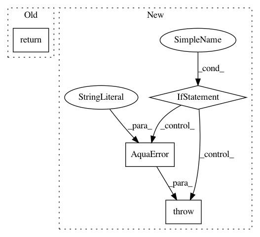

8f8f0b8c01b7859bb59165c6bc4abf74e3be25e8,qiskit/chemistry/algorithms/ground_state_solvers/minimum_eigensolver_factories/vqe_uccsd_factory.py,VQEUCCSDFactory,get_solver,#VQEUCCSDFactory#Any#,114
Before Change
initial_point=self._initial_point,
expectation=self._expectation,
include_custom=self._include_custom)
return vqe
def supports_aux_operators(self):
return VQE.supports_aux_operators()
After Change
Raises:
AquaError: in case a Transformation of wrong type is given.
if not isinstance(transformation, FermionicTransformation):
raise AquaError("VQEUCCSDFactory.getsolver() requires a FermionicTransformation")
num_orbitals = transformation.molecule_info["num_orbitals"]
num_particles = transformation.molecule_info["num_particles"]
qubit_mapping = transformation.qubit_mapping
two_qubit_reduction = transformation.molecule_info["two_qubit_reduction"]
In pattern: SUPERPATTERN
Frequency: 3
Non-data size: 4
Instances
Project Name: Qiskit/qiskit-aqua
Commit Name: 8f8f0b8c01b7859bb59165c6bc4abf74e3be25e8
Time: 2020-10-15
Author: bpa@zurich.ibm.com
File Name: qiskit/chemistry/algorithms/ground_state_solvers/minimum_eigensolver_factories/vqe_uccsd_factory.py
Class Name: VQEUCCSDFactory
Method Name: get_solver
Project Name: Qiskit/qiskit-aqua
Commit Name: 4073c892cb618efd8cb49803461f054975b813c0
Time: 2020-03-05
Author: woodsp@us.ibm.com
File Name: qiskit/aqua/algorithms/minimum_eigen_solvers/vqe.py
Class Name: VQE
Method Name: _run
Project Name: Qiskit/qiskit-aqua
Commit Name: 0dc136791163a2ee7e823ac4da98ebd63390a740
Time: 2019-04-02
Author: MATSUOA@jp.ibm.com
File Name: qiskit/aqua/translators/ising/docplex.py
Class Name:
Method Name: _validate_input_model